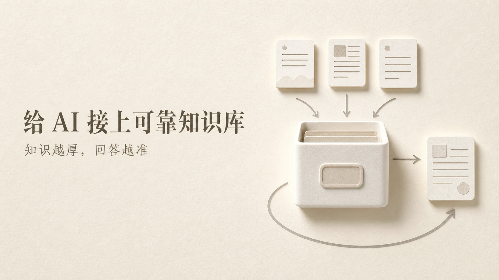
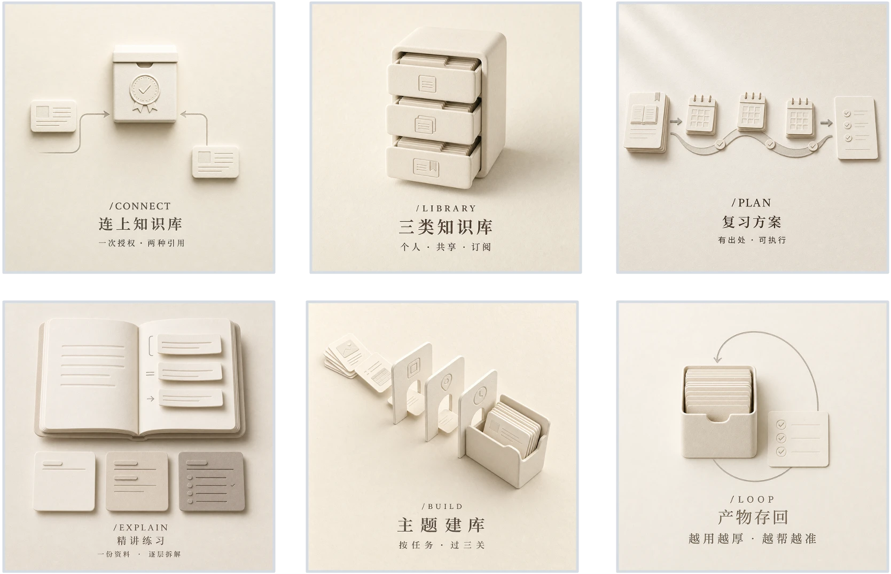
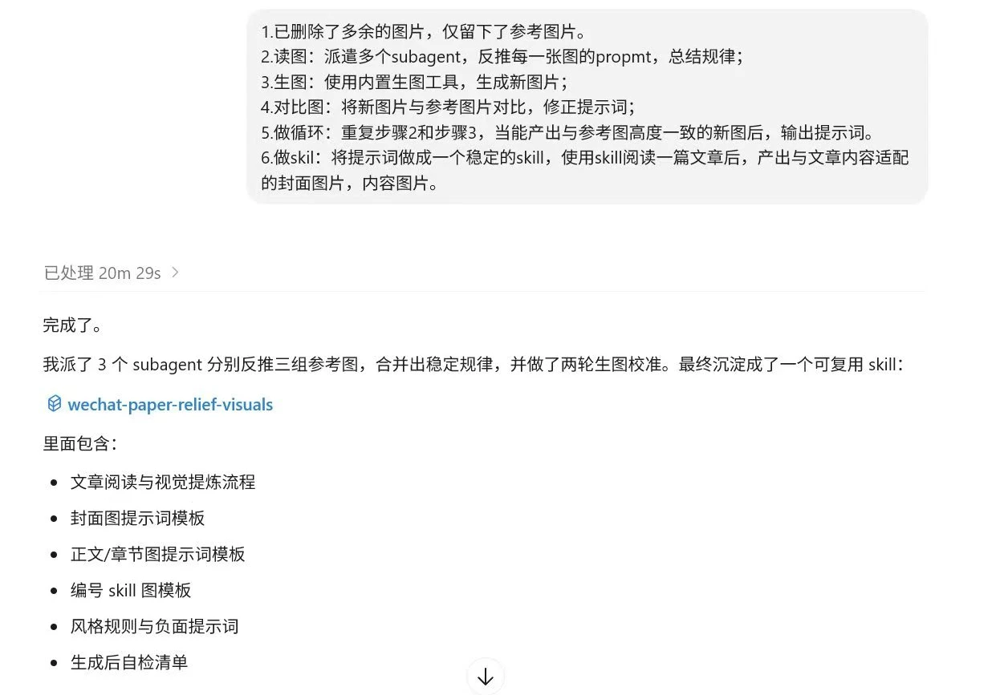
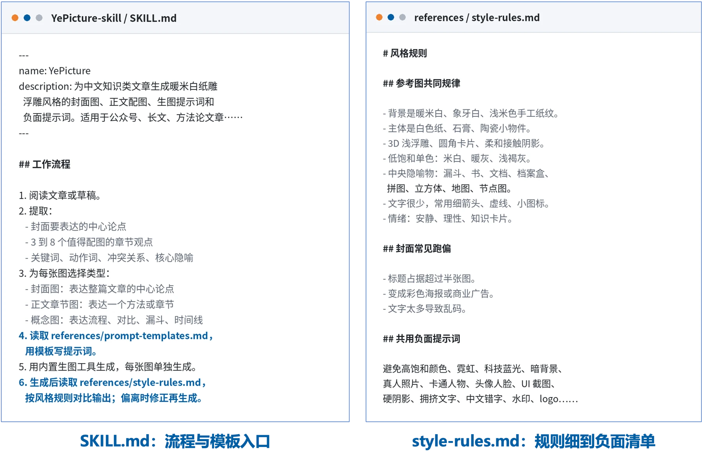
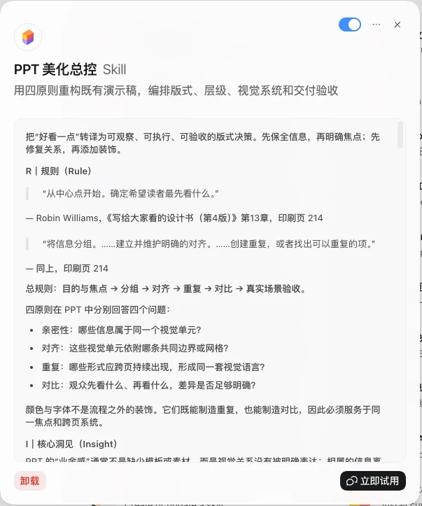
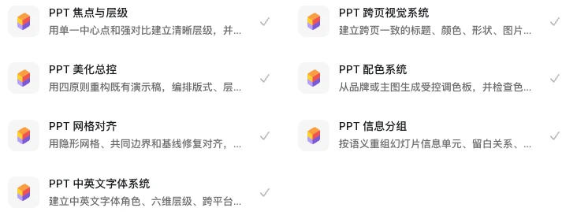
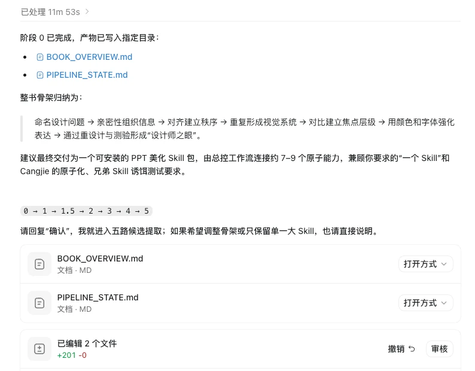
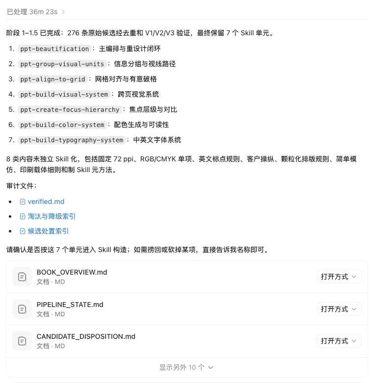
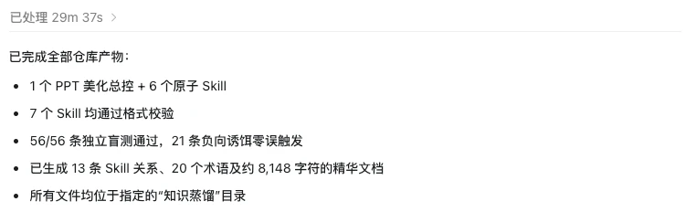
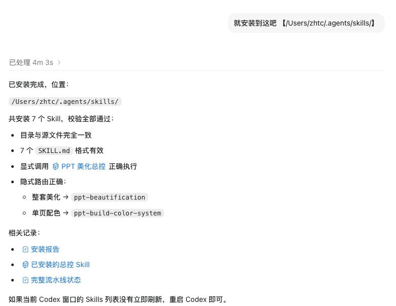

第一部分｜把风格蒸馏成技能
01｜蒸馏出一套配图
上一课用到了 YePicture。这次看看，怎样从参考图中提取风格，做成可复用的配图技能。
这里的“蒸馏”，就是从材料中提取可复用的规律。YePicture 把参考图的风格写成规则，读完文章后，用这些规则生成封面和章节配图。
整套图共用暖米白纸纹底色和白色纸雕物件。封面表达中心论点，章节图各用一个视觉隐喻，也就是用具体物件表现抽象概念。换了内容，风格仍然统一。
这组图是技能给一篇讲知识库的文章做的成品，封面一张，章节六张。

封面图_米白纸雕

章节配图合集_米白纸雕
02｜写出蒸馏指令
先收一组喜欢的参考图，再把这条指令整段交给 AI。
先准备一组风格统一、你想借鉴的参考图。把图片和下面的指令一起交给 AI，让它逐张观察、归纳规律，不必全靠自己描述。
这条指令一共六步：
1 只留参考图：删掉多余图片，仅保留参考图片
2 读图：派多个 subagent 反推每张图的提示词，总结规律
3 生图：用内置生图工具，按规律生成新图片
4 对比：新图与参考图对比，修正提示词
5 循环：重复读图和生图，直到新图与参考图高度一致
6 做 skill：把提示词沉淀成稳定的 skill，读一篇文章就能产出适配的封面图和内容图
这次真机运行用了 20 分 29 秒。3 个 subagent（分头处理素材的 AI 助手）分别分析三组参考图，合并规律，再做两轮生图对比修正，最后形成 YePicture（截图中是临时名字）。技能包含六样东西：文章阅读与视觉提炼流程、封面图提示词模板、章节图提示词模板、编号图模板、风格规则与负面提示词、生成后的自检清单。

蒸馏指令真机运行结果
03｜反推再校准
先观察，再生成、对比和修正，规律才有机会变成可靠的出图规则。
反推规律
让 AI 逐张观察底色、主体材质、阴影软硬和文字比例，再合并共性。我们凭印象说“喜欢这种风格”，容易漏掉细节；这些可观察的特征，才方便写进提示词。
对比修正
按规律生成新图，再与参考图并排比较。比如材质或阴影不一致，就回到提示词修改对应描述，再生成一轮，看偏差是否缩小。
收敛沉淀
反复对比、修正，直到新图的风格与参考图高度一致，再把稳定的规律写进技能。保留下来的是出图规则，参考图不必放入技能；之后换文章、换主题，仍可沿用这些规则。
04｜看看技能文件里有什么
最终保留的是流程、模板和检查规则，提示词只是其中一部分。
主流程文件
SKILL.md 规定操作顺序：读文章、选章节观点、定图片类型，再按模板写提示词。主文件管流程，具体的风格要求放在配套规则文件里。
隐喻词典
隐喻词典把概念对应到能画出的物件：筛选用漏斗，阅读用打开的书，归档用档案盒，流程用节点图。不同文章使用同一套对应关系，图片就更容易保持一致。
规则与自检
风格规则、封面常见偏差和负面提示词分别写成清单。负面提示词说明哪些效果要避免；每次生成后按清单检查，减少主题变化带来的风格偏差。

YePicture技能文件截图
第二部分｜把书蒸馏成技能包
05｜蒸馏一本设计书
参考图能提取风格，书能提取方法。这个案例做成了一个总控和六个原子技能的技能包。
案例用《写给大家看的设计书（第4版）》，共 258 页。读书时觉得原则有用，做 PPT 时却未必想得起该用哪条。我们把这些方法写成技能，遇到设计问题时就能调用。
拆解技能结构
总控先读整套演示稿，按亲密性（相关内容靠近）、对齐（边缘有序）、重复（样式一致）、对比（突出重点）四条原则判断问题，再分派任务。原子技能各专注一件事，分别处理分组、对齐、跨页一致性、焦点、配色和字体。
标注原书页码
总控技能里的每条规则都标着原书出处，例如“从中心点开始，确定希望读者最先看什么”标到《写给大家看的设计书（第4版）》第 13 章、印刷页 214。用到存疑的地方可以翻回原书核对。
按环节切分
按实际设计环节拆分技能，需要改配色就调用配色，需要整体检查就交给总控。书里的方法因此有了明确的使用入口。

PPT美化总控技能详情

装好的七个美化技能
06｜用现成技能蒸馏
把书变成技能，也有现成流程可用：安装 Cangjie 后，给它书和任务要求。
Cangjie 是 GitHub 上的开源技能，可以按内置流程完成蒸馏，不必从头编排每个环节。示例用这句指令启动：
使用【@Cangjie Skill】，把《写给大家看的设计书（第4版）》这本书里的知识，做成一个 PPT 美化的 skill。
Cangjie 分六个阶段：读懂全书、五路提取、三重验证、构造、链接、压力测试。它会在整书骨架和取舍清单两处暂停，等你确认。先看它是否理解全书，再判断哪些内容值得做成技能。
阶段 0 用了 11 分 53 秒，交出两份文件：BOOK_OVERVIEW.md 记录整书骨架，PIPELINE_STATE.md 记录流程状态。书的主线被归纳为：识别设计问题，用亲密性组织信息、对齐建立秩序、重复形成视觉系统、对比突出焦点，再用颜色和字体强化表达，最后通过重设计与测试培养判断。

Cangjie阶段零完成
07｜筛选与验证
五个视角提取了 276 条记录，筛选合并后形成 7 个技能单元。
并行提取
五个提取器分别从框架、原则、案例、反例和术语的角度读全书，共提取 276 条原始记录。分头阅读，是为了从不同角度检查材料。
合并验证
把 276 条记录按主题归类、去重、合并，再经过三重验证，形成 7 个技能单元：主编排与重设计闭环、信息分组与视线路径、网格对齐与有意破格、跨页视觉系统、焦点层级与对比、配色生成与可读性、中英文字体系统。
淘汰留档
未独立成技能的 8 类内容也保留了处理原因：有的作为参考资料，有的用于说明适用边界。数量不是重点，留下的规则能否单独验证才是。

Cangjie候选筛选结果
08｜盲测把关
让没参与编写的 Agent 来测试，看技能会不会做，也会不会在不适合时停下。
测试 Agent 按真实任务出题。本次验收要求 56 条独立测试全部通过，同时 21 条诱饵测试不能误触发技能，两项都达标才交付。
诱饵测试给它不适合的任务，检查是否误触发。例如从零写演讲稿，不属于 PPT 美化，本次测试正确拒绝了这类任务。最终仓库包含 1 个总控、6 个原子技能、13 条技能关系、20 个术语和约 8,148 字符的精华文档。

蒸馏产物汇总
09｜装好并试用
安装后再试三种说法，检查需求能否对应到正确的技能。
这次安装校验了 7 个技能的目录、格式和运行情况，全部通过后装到 ~/.agents/skills/。接着测试三种调用方式：
- 点名调用：直接说「用 PPT 美化总控」，总控技能启动。
- 说清需求：说「把这套 PPT 系统美化」，本次测试调用了总控技能。
- 只说细节：说「重做这页配色」，本次测试只调用配色技能，没有启动总控。
如果技能列表没有立即刷新，重启一次客户端即可。

安装结果与路由
第三部分｜自己动手蒸馏
10｜挑对材料
先看材料里有多少可执行的方法：能说明怎么做、何时用，才值得做成技能。
先问材料中有没有清楚的步骤、判断标准和适用条件。下面按提取方法的难易，列出常见材料的适合程度：
| 材料 | 适合程度 | 说明 |
|---|---|---|
| 方法论密度高的书 | ★★★★★ | 框架清晰、原则可提取，最值得蒸馏 |
| 课程与访谈视频 | ★★★★☆ | 结构化程度高，先转成文字再进流程 |
| 长视频与播客 | ★★★☆☆ | 能蒸馏，知识密度看内容 |
| 金句散文类书 | ★★☆☆☆ | 方法论少，蒸馏出来的东西有限 |
| 小说与叙事文学 | ★☆☆☆☆ | 通常缺少明确的操作方法，不适合本课这类方法蒸馏 |
蒸馏风格时，参考图可以题材不同，但底色、材质、光线和构图方式要统一。否则一张图要求纸雕，另一张要求写实，归纳出的规则就可能互相冲突。
11｜避开翻车点
有了流程，还要检查这三个容易出偏差的地方。
读完全书
自己先读过书，才有依据检查整书骨架和取舍清单：有没有漏掉重要原则，删去的内容是否影响使用？蒸馏帮你保存和调用读书所得，这两处判断仍要由你完成。
收窄触发
只写「用于 PPT 设计」，触发范围太宽，可能连无关任务也接过来。写清适合处理的具体问题，再用诱饵测试检查不适合的任务能否被排除。
留住判断
技能提供步骤和选项，你仍要判断方向是否合适、某一步要不要执行。方法可以复用，具体任务的取舍不能省。
12｜上手走一遍
挑一本已读过的书，或一组风格统一的图，用真实任务检验蒸馏成果。
- 挑料：选一本方法清楚、已经读过的书，或一组喜欢且风格统一的图。
- 开始蒸馏：书籍可以用 Cangjie 的流程；参考图可以用前面的六步指令，或自行编排同样的步骤。
- 验收：把蒸馏出来的技能装进技能目录，再用一次真实任务试它，跑通了才算完成。
案例用的是 Codex，提取规律、验证、封装和试用的思路，也可以迁移到 WorkBuddy 中使用。
小结
- 看清同一条路：图片提取风格，书本提取方法，都要归纳规律、生成或执行、对比修正，再写成技能。换成课程视频或访谈录音，先转文字，仍可以沿用这个思路。
- 攒下可复用规律：技能保留规则、清单和自检标准，参考图和原书不必随技能一起存放。换一个任务时，沿用这些规则，并在需要时回查原材料。
- 守住人的判断：先判断材料是否有可用方法，读过书后再确认骨架与取舍。装好技能，拿一个真实任务试用，结果达到要求才算完成。